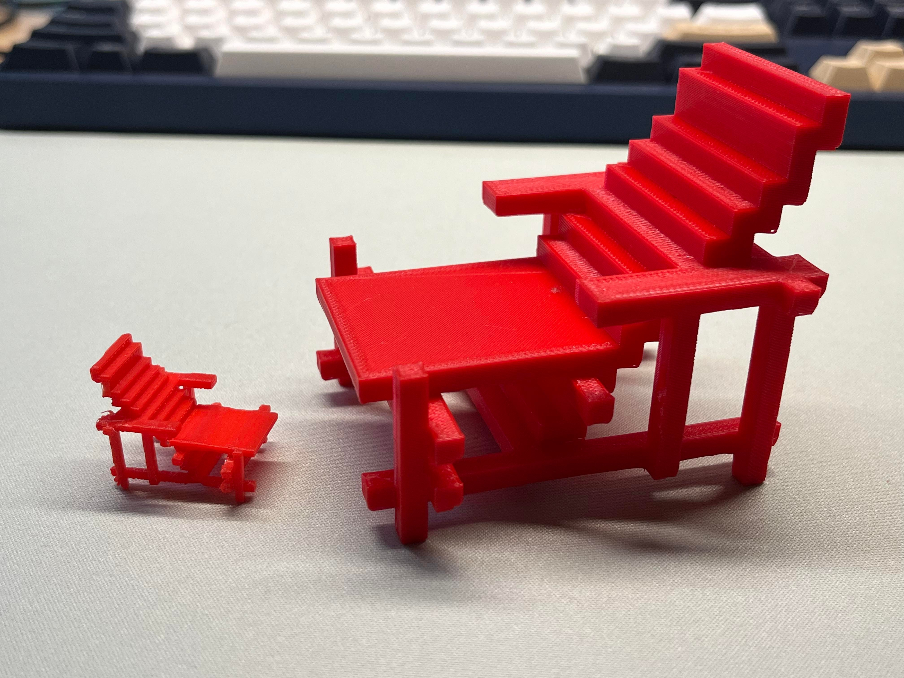
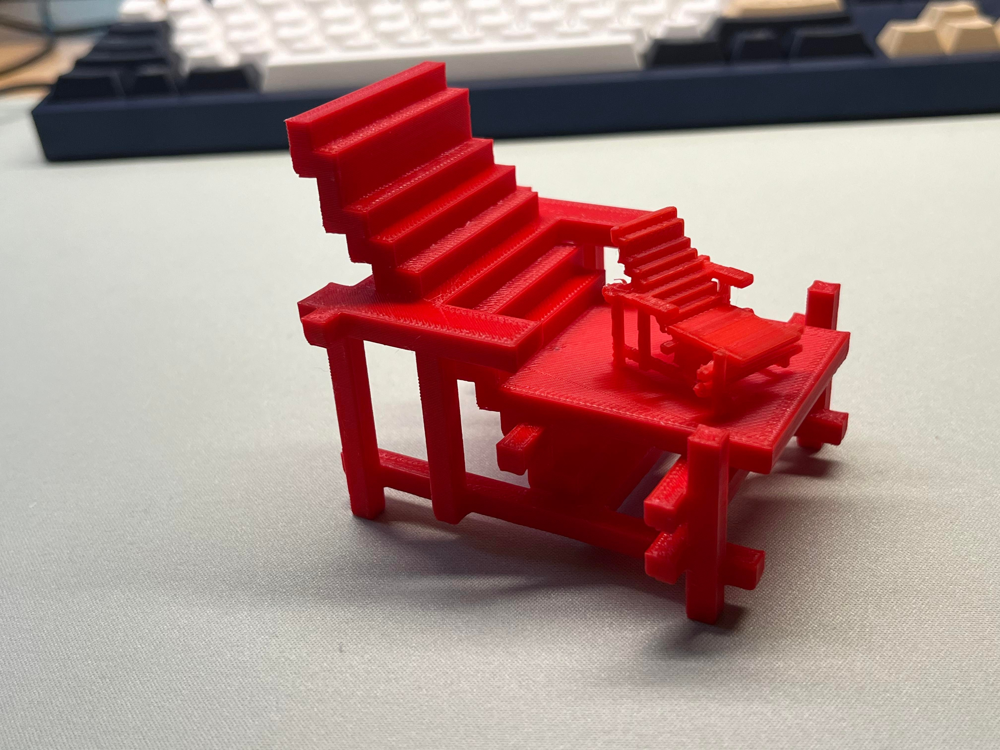

Recreating Rietveld's Red Blue Chair
Using Minecraft To Show Cultural Significance
The challenge was to use and "sandbox" environment to create a sculpture of cultural significance, and then 3D printing the results. For my sculpture, I did Gerrit Rietveld's Red Blue Chair which was designed in 1918. Being in the interior design major, we see countless numbers of chairs and the way they have changed throughout the years as a result of different styles and ergonomic design choices. The colors of red, blue, and yellow as well as the horizontal and vertical symmetry represent the colors of the De Stijl movement, which valued abstraction and simplicity.


